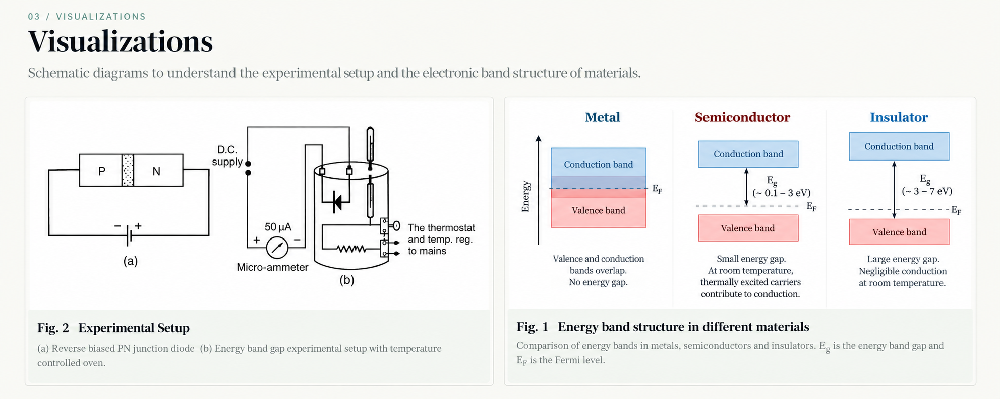

01 / AIM
What are we measuring?
To determine the energy band gap, Eg, of a semiconductor using a reverse-biased p–n junction diode by measuring its reverse saturation current at different temperatures.
Equipment
How does temperature reveal the band gap?
In a solid, allowed electron energies form bands. The valence band is normally occupied by electrons, while the conduction band contains mobile electrons that contribute to electrical conduction. The energy separation between the top of the valence band and the bottom of the conduction band is the energy band gap, denoted by Eg.
At low temperatures, relatively few electrons have enough thermal energy to cross the gap. As temperature rises, more electron–hole pairs are generated, and semiconductor conductivity generally increases. Representative room-temperature band gaps are about 0.66–0.72 eV for germanium and about 1.1 eV for silicon; values vary with temperature and material.
A p–n junction is formed by joining p-type and n-type semiconductor regions. Under reverse bias, the depletion region widens and the current remains small before breakdown. This reverse current is associated mainly with minority carriers and thermally generated carriers. Its magnitude increases strongly with junction temperature and depends on the band gap.
For the temperature range and approximation used in this experiment, the supplied manual gives the relation:
Here T is the absolute temperature in kelvin, Eg is in electron-volts and C is treated as a constant over the measured range. Therefore, a plot of log10 Is against 103/T is approximately a straight line with a negative slope.
The Fermi level describes the electron chemical potential and helps explain carrier populations. In an intrinsic semiconductor it lies approximately near the middle of the band gap; doping shifts it toward the conduction band in n-type material or toward the valence band in p-type material.
Further reading: IIT Kanpur Virtual Labs — Energy Band Gap of a Semiconductor and IIT Bombay Virtual Labs — Energy Band Gap of a Semiconductor. The experimental relation and procedure follow the supplied laboratory manual.
These resources develop p-n junction formation, forward and reverse bias, diode current–voltage characteristics, resistance, and breakdown. The experiment procedure is also cross-checked against IIT Virtual Labs and NPTEL laboratory material.
Visualizing the setup and energy bands
The diagrams below connect the measurement procedure with the physical meaning of the energy band gap.

The band diagrams are schematic. The relative gap sizes illustrate the general distinction between materials; actual band-gap values depend on the material and temperature.
Watch the experiment
Experimental sequence
- Insert the thermometer into the provided oven opening and check the instrument connections.
- Switch on the instrument and set the temperature control to the high side as specified by the kit manual.
- Set the reverse-bias supply to 1 V DC, then switch on the oven.
- Allow the temperature to rise to approximately 90–100 °C. Switch off the oven at the prescribed limit; do not exceed 100 °C for this setup.
- As the temperature falls, record the microammeter current and temperature simultaneously at intervals of 5 °C or 10 °C.
- Repeat the observations at 2 V and 3 V DC, keeping the diode reverse-biased throughout.
- Convert temperature readings to kelvin, calculate 10³/T and log10 Is, and plot log10 Is against 10³/T for each voltage.
- Determine the magnitude of each fitted slope, calculate the corresponding band gap, and find the average.
Precaution: Keep the diode reverse-biased, do not exceed the specified temperature limit, and record current and temperature together.
Enter your readings
Record the reverse saturation current at each temperature for the three applied voltages. The temperature values below follow the supplied manual and can be edited to match your measurements.
| Trial | Temp (°C) | Temp (K) | Is at 1 V (µA) | Is at 2 V (µA) | Is at 3 V (µA) |
|---|
Enter positive current magnitudes greater than zero, since log10(0) is undefined.
From measured current to band gap
Select a voltage series. The calculator evaluates log10(Is) and 10³/T, fits a straight line and estimates the band gap using the relation in the manual.
Enter your measurements, then calculate.
| Trial | 10³/T | log10(Is / µA) |
|---|
Plot log current against inverse temperature
The graph is plotted using the measured points and a straight line obtained by least-squares linear regression. The X-axis is 10³/T, where T is in kelvin; the Y-axis is log₁₀(Iₛ/µA), which is dimensionless because the measured current is entered in microamperes.
Orange markers represent experimental data; the blue line is the least-squares fit. Recalculate after changing the temperature, current values, or selected voltage.
Experimental result
The energy band gap of the given semiconductor is estimated from the slope of the graph of log10(Is) against 10³/T.
Think like an experimental physicist
Try to predict the result first. Click each question to reveal the explanation.
As the diode cools, the reverse saturation current \(I_s\) generally decreases, so \(\log_{10}(I_s)\) also decreases. At the same time, the absolute temperature \(T\) decreases, making \(10^3/T\) increase. Therefore, the points tend to move to the right and downward. The manual predicts an approximately straight line with a negative slope.
The student with the steeper negative slope obtains the larger estimate. According to the supplied manual, \(E_g=|m|/5.036\), where \(m\) is the slope of the graph of \(\log_{10}(I_s)\) against \(10^3/T\). A larger slope magnitude therefore gives a larger calculated \(E_g\). The intercept does not appear in this calculation.
The horizontal-axis values will be wrong, changing the fitted slope and hence the estimated band gap. The temperature-dependent relation uses absolute temperature, so convert every reading using \(T(\mathrm K)=t(^{\circ}\mathrm C)+273.15\). For example, \(57^{\circ}\mathrm C=330.15\,\mathrm K\), not 57 K.
A single temperature-current pair cannot determine a graph's slope. Several paired measurements provide enough data to plot \(\log_{10}(I_s)\) against \(10^3/T\), fit a straight line and estimate the band gap. The supplied manual specifically instructs students to take readings at intervals as the temperature falls, recording current and temperature together.
\(\log_{10}(0)\) is undefined, so a zero reading cannot be plotted on the required logarithmic axis. Check the meter range, electrical connections, diode polarity and reading procedure, and repeat the measurement if appropriate. Do not replace the zero with an invented current value. If the current is below the instrument's resolution, record that limitation and ask the instructor how to handle it.
This experiment uses the temperature dependence of the reverse saturation current, which is small before breakdown and is mainly associated with minority carriers. Forward bias lowers the junction barrier and injects majority carriers, producing a much larger current. Those readings do not represent the reverse-saturation-current relation used to determine the band gap and may also cause unwanted heating.
No. First check the original notebook, thermometer reading, microammeter range, connections, bias voltage and whether the current and temperature were recorded simultaneously. Repeat the measurement if possible. Exclude a point only when there is a defensible experimental reason, and document that reason. A point should not be removed merely because it does not match the expected line.
The manual asks for separate data sets at the three reverse-bias settings, so each can be plotted and its slope used to estimate \(E_g\). Since all measurements concern the same semiconductor, the results should be reasonably consistent, but they need not be exactly identical. Measurement uncertainty, non-ideal junction behaviour and the approximate model can produce differences. The manual instructs students to take the average of the three estimates.
Check that the horizontal axis is \(10^3/T\) and the vertical axis is \(\log_{10}(I_s)\), that temperature is in kelvin, and that every current is paired with the correct temperature. Check for data-entry errors and confirm that the graph uses the same voltage series throughout. The manual predicts a negative slope for these axes. Use its magnitude in the band-gap formula only after investigating the unexpected sign.
At the same temperature, a smaller band gap generally permits more electrons to be thermally excited from the valence band to the conduction band. Germanium has a smaller room-temperature band gap (about 0.66–0.72 eV) than silicon (about 1.1 eV), so intrinsic germanium generally has a higher intrinsic carrier concentration. The measured junction current also depends on other material and device properties.
A line fitted to several valid data points uses the overall trend and reduces the influence of random errors in any one measurement. A slope calculated from only two points depends entirely on those two readings, so an error in either point can change the result considerably. Several readings also make it easier to notice anomalous points or curvature.
No, the slope should remain the same. Converting all currents by the same factor adds a constant to every logarithmic value because \(\log_{10}(aI_s)=\log_{10}(I_s)+\log_{10}(a)\). This shifts the graph vertically but does not change its slope. Mixing units within a data set, however, would introduce an error.
First verify that Celsius readings were converted to kelvin, \(10^3/T\) was calculated correctly, and \(\log_{10}(I_s)\) rather than raw current was plotted. Confirm the axes, the current units, the selected voltage series and the sign/magnitude of the fitted slope. Inspect suspicious readings and repeat them if possible. Finally, check that the manual's coefficient 5.036 is used with \(E_g\) expressed in electron-volts. Only after these checks should the result be interpreted physically.